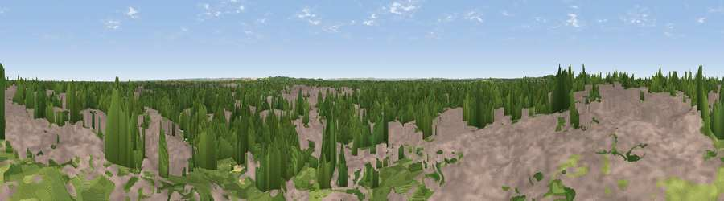

Viewpoint near Cambridge
#42360 in England · top 54% of its area beats it · near CambridgeWhere it is
The exact computed spot (TL 44583 59196). Click the marker for map links.
The view, rendered

A 360° render of this exact spot computed from the terrain model, tree cover and land cover — summer colours, afternoon light, calibrated against photographs of famous viewpoints. Real trees, hedges and buildings will differ in detail.
The panorama
Grey silhouette: terrain skyline in each direction (720 bearings, Earth curvature and refraction included). Dashed green: skyline with trees (+15 m) and buildings (+8 m) as obstacles. Blue strip: how far the ground is visible on each bearing.
Where the view opens
Wedge length = distance to the farthest visible ground on that bearing (vegetation-aware). Rings at 10, 25 and 50 km.
What fills the view
53% built-up · 32% woodland · 11% grassland · 4% cropland
Angular shares of the visible panorama (visual magnitude), not map area. Landscape diversity 0.47 (0–1 Shannon).
Key numbers
More beautiful places nearby
The staircase of upgrades: each row has a higher view potential than everything closer. Driving times are estimates from straight-line distance, calibrated against real road routing — check an actual route before setting out.
| Place | Direction | Drive | Score |
|---|---|---|---|
| Viewpoint near Coton | WSW · 4 km | ~9 min | 41.8 |
| Viewpoint near Teversham | SE · 5 km | ~11 min | 46.7 |
| Cambridge high point | SE · 7 km | ~14 min | 49.2 |
| Viewpoint near Stapleford | SSE · 8 km | ~15 min | 54.8 |
| Viewpoint near Royston | SSW · 22 km | ~36 min | 56.6 |
| Viewpoint near Hexton | SW · 43 km | ~63 min | 65.4 |
| Viewpoint near Church End | SW · 58 km | ~80 min | 65.8 |
| Beacon Hill | SW · 64 km | ~87 min | 74.1 |
52.21202, 0.11472 · source: osm viewpoint · position refined by local search. Computed location — check access rights before visiting.